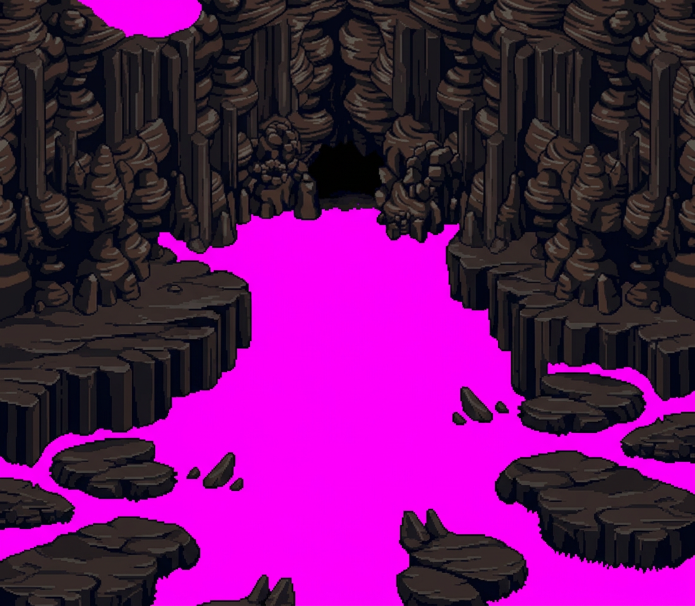
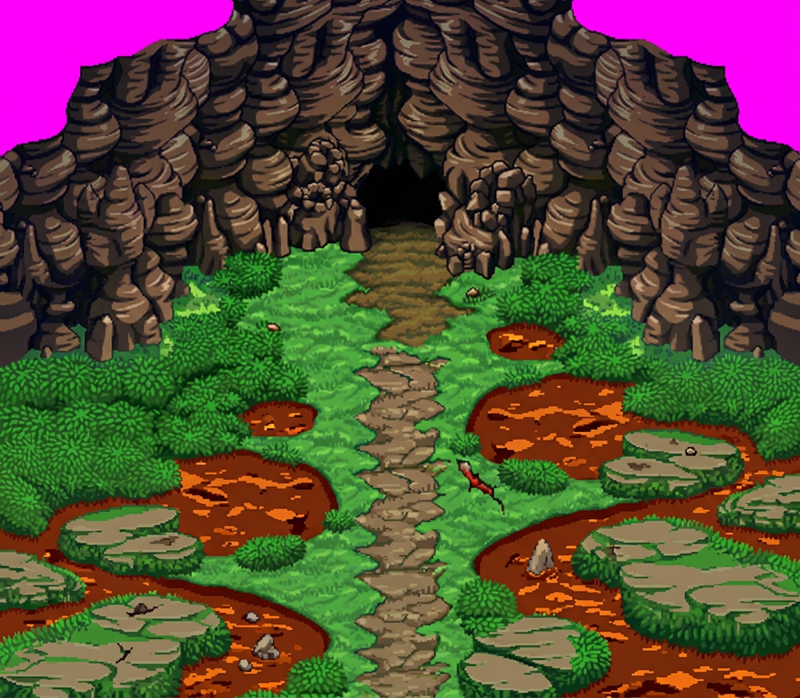
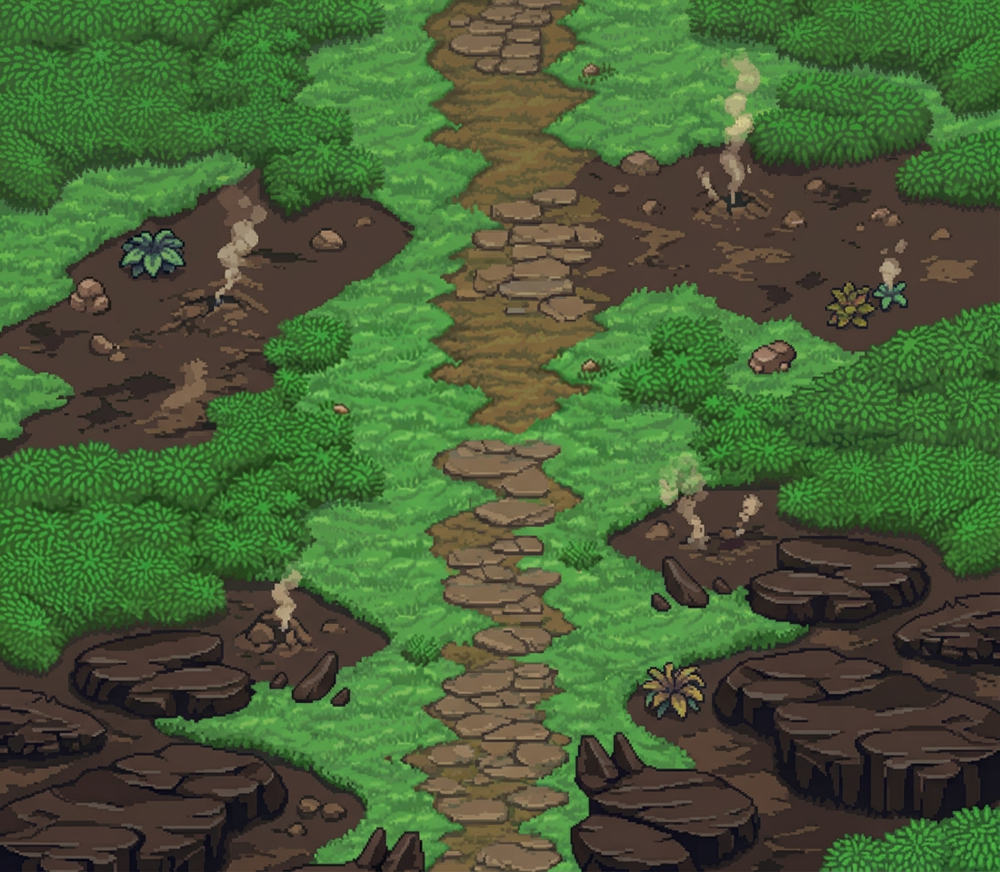
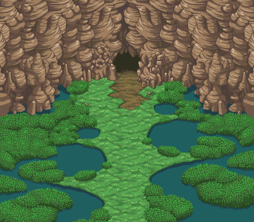

Génération multicalques sur fond magenta · Textures de sol authentiques de Steam Cave (herbe de pente, terre volcanique, sentier) adaptées au relief rocheux
La première génération retenue : falaises volcaniques et parois sur fond magenta pur.

Le sol de Steam Cave (herbe de pente, terre, sentier) généré pour s'adapter exactement aux contours des rochers.

Plaque de sol intégrale sous-jacente garantissant l'absence de vide sous les falaises.

La carte originale NDS de Steam Cave fournissant la palette et les textures du sol.
